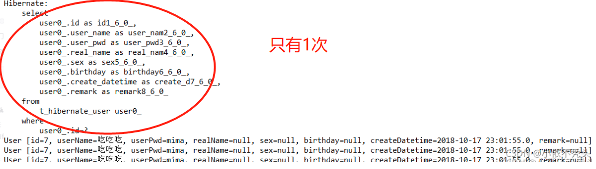
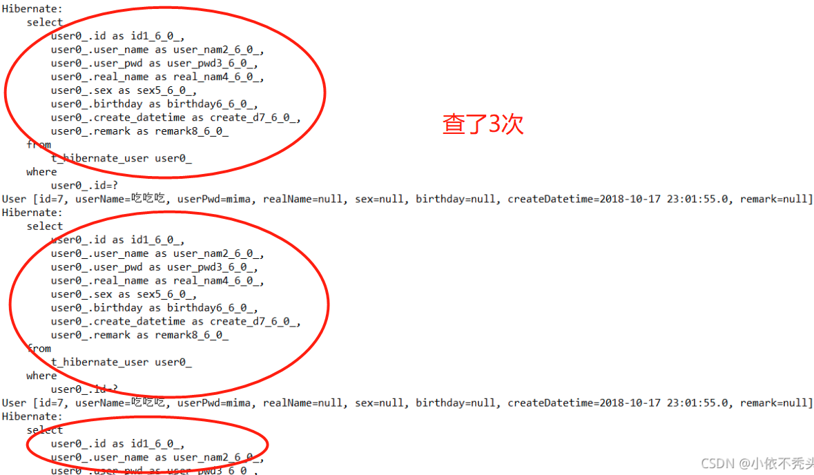
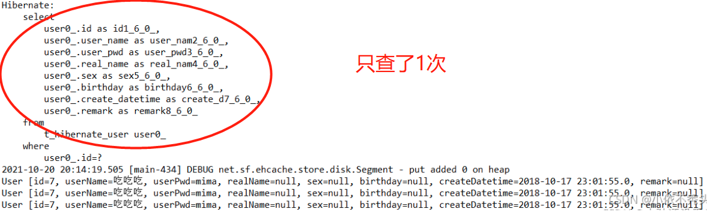
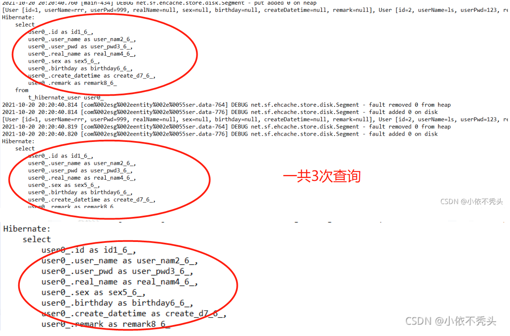
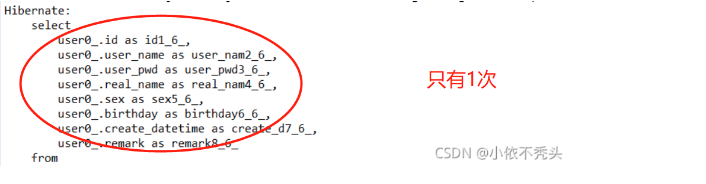

TreeviewCopyright © qgao 2021-* all right reserved, powered by aleen42
Hibernate之二级缓存
1 缓存介绍
缓存：拉高程序的性能
1.1 数据库与缓存
1.1.1 数据库分类
关系型数据库：数据与数据之间存在关系（联系）的数据库
- mysql
- Oracle
- sqlserver
非关系型数据库：数据与数据之间是不存在关系的------以键值对的形式存在
- 基于文件存储的数据库：ehcache
- 基于内存存储的数据库：redis,memcache
- 基于文档存储的数据库：mongodb
1.1.2 可用作缓存的数据库
基本上都使用非关系型数据库作为缓存。
1.1.3 缓存保存哪些数据
根本不修改或很少被修改的数据，但这类数据又被频繁查询。（数据字典存储）
1.1.4 数据字典
一个项目中所有的基础数据，比如项目中的所有下拉框/菜单之类的数据。
表设计：
- 数据源表：数据源标识，数据源描述
- 数据项表：数据源标识，数据项键，数据值
- (cacheName, cache(cacheKey,cacheValue))
解决的问题：避免了动不动就建很多表的情况
1.2 ehcache作为缓存
Ehcache是现在最流行的纯Java开源缓存框架，配置简单，结构清晰，功能强大。
1.2.1 导入相关依赖
<dependency>
<groupId>net.sf.ehcache</groupId>
<artifactId>ehcache</artifactId>
<version>2.10.0</version>
</dependency>
1.2.2 核心概念
- CacheManager：缓存管理器
- Cache：缓存对象，缓存管理器内可以放置若干cache，存放数据的介质（所有cache都实现了Ehcache接口）
- Element：单条缓存数据的组成单位
1.2.3 配置文件：ehcache.xml
2 hibernate缓存
hibernate可分为：
- 一级缓存：session
- 二级缓存：SessionFactory（可拔插式）
2.1 导入ehcache相关依赖
<dependency>
<groupId>org.hibernate</groupId>
<artifactId>hibernate-ehcache</artifactId>
<version>5.2.12.Final</version>
</dependency>
2.2 添加ehcache.xml
<?xml version="1.0" encoding="UTF-8"?>
<ehcache xmlns:xsi="http://www.w3.org/2001/XMLSchema-instance"
xsi:noNamespaceSchemaLocation="http://ehcache.org/ehcache.xsd"
updateCheck="false">
<!--磁盘存储:将缓存中暂时不使用的对象,转移到硬盘,类似于Windows系统的虚拟内存-->
<!--path:指定在硬盘上存储对象的路径-->
<!--java.io.tmpdir 是默认的临时文件路径。 可以通过如下方式打印出具体的文件路径 System.out.println(System.getProperty("java.io.tmpdir"));-->
<diskStore path="D://xxx"/>
<!--defaultCache：默认的管理策略-->
<!--eternal：设定缓存的elements是否永远不过期。如果为true，则缓存的数据始终有效，如果为false那么还要根据timeToIdleSeconds，timeToLiveSeconds判断-->
<!--maxElementsInMemory：在内存中缓存的element的最大数目-->
<!--overflowToDisk：如果内存中数据超过内存限制，是否要缓存到磁盘上-->
<!--diskPersistent：是否在磁盘上持久化。指重启jvm后，数据是否有效。默认为false-->
<!--timeToIdleSeconds：对象空闲时间(单位：秒)，指对象在多长时间没有被访问就会失效。只对eternal为false的有效。默认值0，表示一直可以访问-->
<!--timeToLiveSeconds：对象存活时间(单位：秒)，指对象从创建到失效所需要的时间。只对eternal为false的有效。默认值0，表示一直可以访问-->
<!--memoryStoreEvictionPolicy：缓存的3 种清空策略-->
<!--FIFO：first in first out (先进先出)-->
<!--LFU：Less Frequently Used (最少使用).意思是一直以来最少被使用的。缓存的元素有一个hit 属性，hit 值最小的将会被清出缓存-->
<!--LRU：Least Recently Used(最近最少使用). (ehcache 默认值).缓存的元素有一个时间戳，当缓存容量满了，而又需要腾出地方来缓存新的元素的时候，那么现有缓存元素中时间戳离当前时间最远的元素将被清出缓存-->
<defaultCache eternal="false" maxElementsInMemory="1000" overflowToDisk="false" diskPersistent="false"
timeToIdleSeconds="0" timeToLiveSeconds="600" memoryStoreEvictionPolicy="LRU"/>
<!--name： Cache的名称，必须是唯一的(ehcache会把这个cache放到HashMap里)-->
<cache name="com.javaxl.one.entity.User" eternal="false" maxElementsInMemory="100"
overflowToDisk="false" diskPersistent="false" timeToIdleSeconds="0"
timeToLiveSeconds="300" memoryStoreEvictionPolicy="LRU"/>
</ehcache>
2.3 hibernate.cfg.xml中添加二级缓存相关配置
<!-- 开启二级缓存 -->
<property name="hibernate.cache.use_second_level_cache">true</property>
<!-- 开启查询缓存 -->
<property name="hibernate.cache.use_query_cache">true</property>
<!-- EhCache驱动 -->
<property name="hibernate.cache.region.factory_class">org.hibernate.cache.ehcache.EhCacheRegionFactory</property>
2.4 指定实体类开启二级缓存
<!-- 注解式开发 -->
<class-cache usage="read-write" class="entity.Dict"/>
<!-- xml配置方式 -->
<class table="t_sys_dict" name="entity.Dict">
<!-- 这里的region指的是Ehcache.xml中cacheName -->
<cache usage="read-write" region="com.zking.one.entity.User"/>
.......
</class>
注意：hibernate二级缓存不会同时缓存多条数据，若想查询同一张表的多条记录，需要通过编写代码来开启二级缓存： query.setCacheRegion("entity.Dict");//指定缓存策略，名字必须实体类的完整类名 query.setCacheable(true);//手动开启二级缓存
3 测试二级缓存的使用
3.0 测试代码
/**
* 演示查单个用户使用了缓存
* @author Administrator
*
*/
public class EhcacheDemo3 {
/**
* sql语句只生成一次，因为是同一个session，且只查了同一条记录，即用到了一级缓存
*/
@Test
public void test1() {
Session session = SessionFactoryUtil.getSession();
Transaction transaction = session.beginTransaction();
User user = session.get(User.class, 7);
System.out.println(user);
User user2 = session.get(User.class, 7);
System.out.println(user2);
User user3 = session.get(User.class, 7);
System.out.println(user3);
transaction.commit();
session.close();
}
/**
* 默认情况下，sql语句形成了三次，每一次运行的都是new的一个userdao，每次都新建了session
* 因此这里为了提高性能，后面必须使用二级缓存SessionFactory缓存
*/
@Test
public void test2() {
UserDao userDao = new UserDao();
User u = new User();
u.setId(7);
User user = userDao.get(u); //第1次
System.out.println(user);
User user2 = userDao.get(u); //第2次
System.out.println(user2);
User user3 = userDao.get(u); //第3次
System.out.println(user3);
}
}
3.1 不开二级缓存的结果
- test1：

- test2：

3.2 开启二级缓存的结果
配置上1小节的内容后，
- test2：

4 测试多条记录的缓存
4.0 测试代码
/**
* hibernate二级缓存不会同时缓存多条数据
* @author Administrator
*
*/
public class EhcacheDemo4 {
public static void main(String[] args) {
Session session = SessionFactoryUtil.getSession();
Transaction transaction = session.beginTransaction();
Query query = session.createQuery("from User");
//query.setCacheable(true); //注释掉
List list = query.list(); //第1次
System.out.println(list);
List list2 = query.list(); //第2次
System.out.println(list2);
List list3 = query.list(); //第3次
System.out.println(list3);
transaction.commit();
session.close();
}
}
4.1 注释掉的结果

4.2 打开注释的结果
